<title>Questions With Paintings</title>
<meta name="claude:viewport-fit-sides" content="cover">
<link rel="preconnect" href="https://fonts.googleapis.com">
<link rel="preconnect" href="https://fonts.gstatic.com" crossorigin>
<link rel="stylesheet" href="https://fonts.googleapis.com/css2?family=Ysabeau:wght@500;600&display=swap">
<style>
  /* Layout: one calm column of paper, like the site: what Mo sees first (NuriCell built), then the
     phone, the other four pages, every painting, and what changed. */
  :root {
    --paper: #f8f3ea;
    --sheet: #fffdf8;
    --ink: #0c0b0a;
    --muted: #514e48;
    --hair: rgba(28, 27, 25, 0.22);
    --gold: #7d5f1c;
    --title: "Ysabeau", "Iowan Old Style", Georgia, serif;
    --body: system-ui, -apple-system, "Segoe UI", Roboto, Helvetica, Arial, sans-serif;
  }
  @media (prefers-color-scheme: dark) {
    :root:not([data-theme="light"]) {
      --paper: #1b1a18; --sheet: #24221f; --ink: #efe9dd; --muted: #b9b2a5;
      --hair: rgba(239, 233, 221, 0.2); --gold: #d4b26a; color-scheme: dark;
    }
  }
  :root[data-theme="dark"] {
    --paper: #1b1a18; --sheet: #24221f; --ink: #efe9dd; --muted: #b9b2a5;
    --hair: rgba(239, 233, 221, 0.2); --gold: #d4b26a; color-scheme: dark;
  }
  body {
    background: var(--paper);
    color: var(--ink);
    font: 17px/1.55 var(--body);
    padding-left: max(16px, env(safe-area-inset-left, 0px));
    padding-right: max(16px, env(safe-area-inset-right, 0px));
  }
  main { max-width: 1120px; margin: 0 auto; padding-block: 40px 80px; display: grid; gap: 64px; }
  h1, h2 { font-family: var(--title); font-weight: 600; letter-spacing: -0.01em; text-wrap: balance; margin: 0; }
  h1 { font-size: clamp(34px, 5vw, 52px); line-height: 1.05; }
  h2 { font-size: clamp(26px, 3.4vw, 38px); line-height: 1.1; }
  p { margin: 0; max-width: 62ch; }
  .lede { display: grid; gap: 14px; }
  .lede p { color: var(--muted); }
  .lede p.status { color: var(--ink); font-weight: 600; }
  section { display: grid; gap: 20px; padding-top: 28px; border-top: 1px solid var(--hair); }
  ul { margin: 0; padding-left: 1.2em; display: grid; gap: 6px; max-width: 64ch; }
  li::marker { color: var(--muted); }
  .score { font-weight: 600; }
  .score b { color: var(--gold); }
  figure { margin: 0; display: grid; gap: 8px; min-width: 0; }
  figure img { display: block; width: 100%; height: auto; border: 1px solid var(--hair); border-radius: 6px; background: var(--sheet); }
  figcaption { color: var(--muted); font-size: 14.5px; }
  .two { display: grid; grid-template-columns: repeat(2, minmax(0, 1fr)); gap: 20px; align-items: start; }
  .phones { display: grid; grid-template-columns: repeat(2, minmax(0, 300px)); gap: 20px; }
  .product { display: grid; gap: 10px; }
  .product h3 { margin: 0; font: 600 17px/1.3 var(--body); }
  .paints { display: grid; grid-template-columns: repeat(6, minmax(0, 1fr)); gap: 10px; }
  .paints figure img { border: 0; background: none; border-radius: 0; }
  .paints figcaption { font-size: 13px; line-height: 1.35; }
  .note { color: var(--muted); }
  @media (max-width: 760px) {
    .two { grid-template-columns: 1fr; }
    .phones { grid-template-columns: repeat(2, minmax(0, 1fr)); }
    .paints { grid-template-columns: repeat(2, minmax(0, 1fr)); }
  }
</style>

<main>
  <div class="lede">
    <h1>A is built: a painting for each question</h1>
    <p class="status">On all five product pages. On my computer only: nothing is live and nothing is pushed.</p>
    <p class="score">My score: <b>8.5 / 10</b></p>
    <p class="note">What holds it back: the round "+" repeats down every row, a little busy. The hand holding one Green Bee Propolis capsule is loose, and its fingers are a bit odd. The OPC and Propolis calendars are near twins (Propolis's has a bee on it).</p>
  </div>

  <section>
    <h2>NuriCell on a laptop</h2>
    <ul>
      <li>Questions on the left. The picked one has a pale ink wash behind it.</li>
      <li>The others have a round "+", so they look like they can be clicked.</li>
      <li>Click one: the old answer fades out, then the new painting and answer fade in.</li>
    </ul>
    <div class="two">
      <figure>
        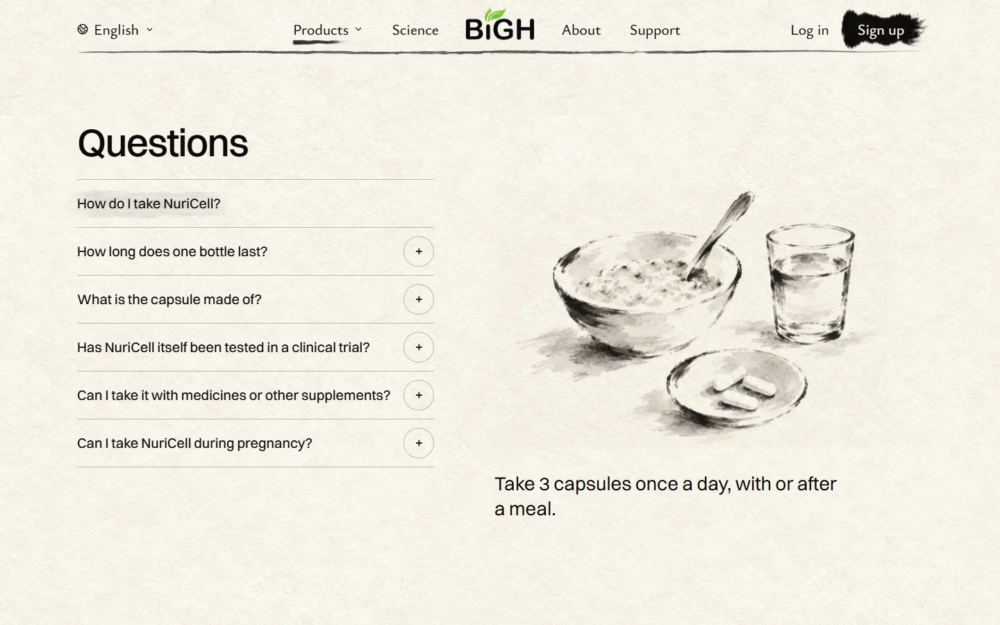
        <figcaption>As the page opens: the first question picked.</figcaption>
      </figure>
      <figure>
        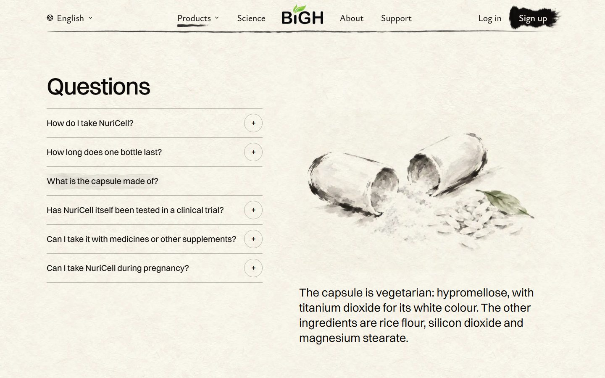
        <figcaption>After clicking "What is the capsule made of?"</figcaption>
      </figure>
    </div>
  </section>

  <section>
    <h2>NuriCell on a phone</h2>
    <p>Each question opens in place with its painting. Tap it again to close it.</p>
    <div class="phones">
      <figure>
        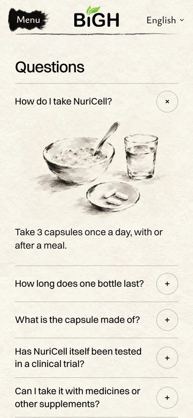
        <figcaption>As the page opens.</figcaption>
      </figure>
      <figure>
        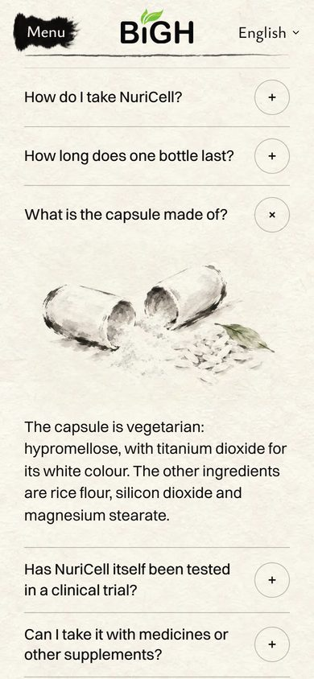
        <figcaption>After tapping the third question.</figcaption>
      </figure>
    </div>
  </section>

  <section>
    <h2>The other four pages</h2>
    <p>Same layout, their own questions and their own paintings.</p>
    <div class="two">
      <figure>
        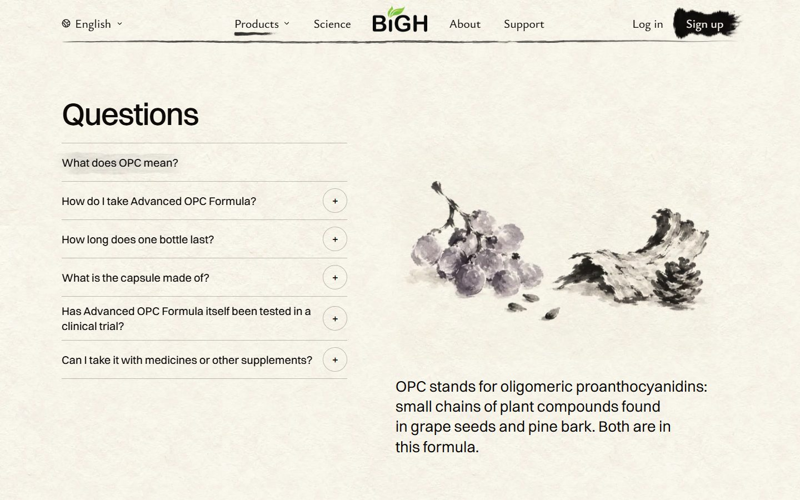
        <figcaption>Advanced OPC Formula: grapes and pine bark, where OPC comes from.</figcaption>
      </figure>
      <figure>
        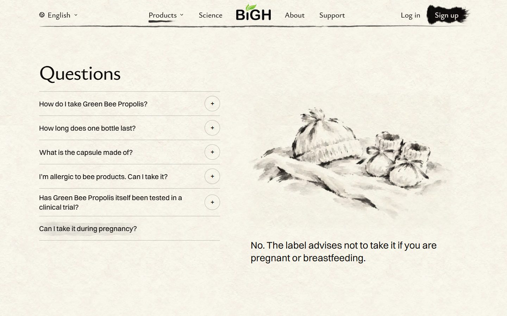
        <figcaption>Green Bee Propolis: the pregnancy question.</figcaption>
      </figure>
      <figure>
        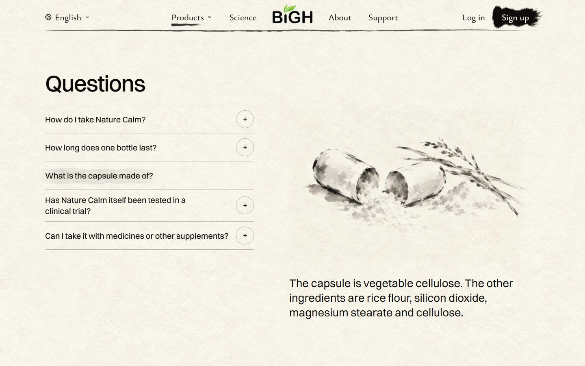
        <figcaption>Nature Calm: what the capsule is made of.</figcaption>
      </figure>
      <figure>
        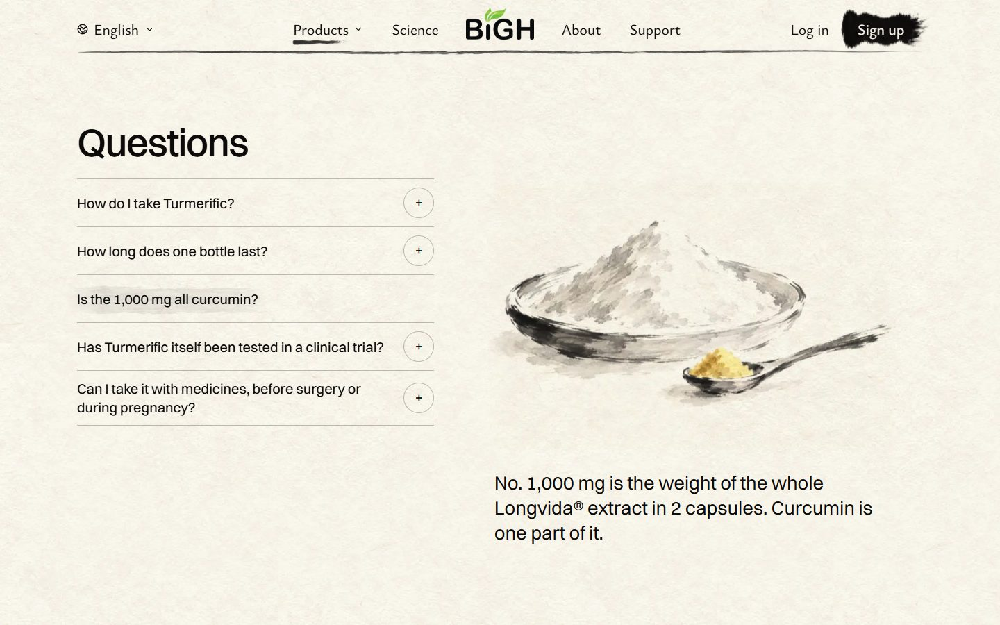
        <figcaption>Turmerific: curcumin is one part of the 1,000 mg.</figcaption>
      </figure>
    </div>
  </section>

  <section>
    <h2>All 28 paintings</h2>
    <p>One per question. Each one matches the label: the right number of capsules, their colour, 30 days to a month.</p>
    <div class="product">
      <h3>NuriCell</h3>
      <div class="paints">
        <figure>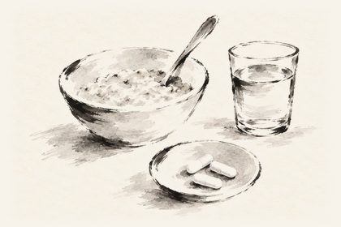<figcaption>How do I take it?</figcaption></figure>
        <figure>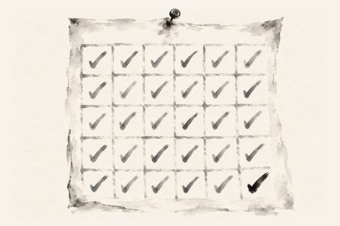<figcaption>How long does a bottle last?</figcaption></figure>
        <figure>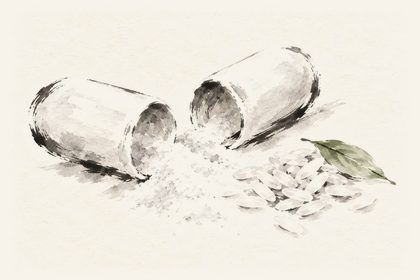<figcaption>What is the capsule made of?</figcaption></figure>
        <figure>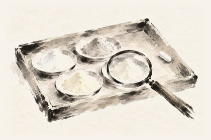<figcaption>Clinical trial?</figcaption></figure>
        <figure>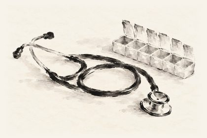<figcaption>With medicines?</figcaption></figure>
        <figure>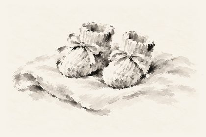<figcaption>During pregnancy?</figcaption></figure>
      </div>
    </div>
    <div class="product">
      <h3>Advanced OPC Formula</h3>
      <div class="paints">
        <figure>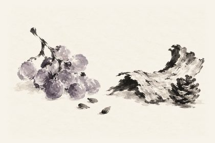<figcaption>What does OPC mean?</figcaption></figure>
        <figure>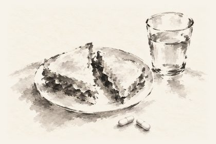<figcaption>How do I take it?</figcaption></figure>
        <figure>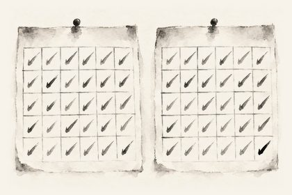<figcaption>How long does a bottle last?</figcaption></figure>
        <figure>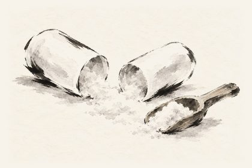<figcaption>What is the capsule made of?</figcaption></figure>
        <figure>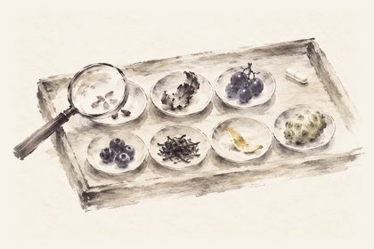<figcaption>Clinical trial?</figcaption></figure>
        <figure><figcaption>With medicines?</figcaption></figure>
      </div>
    </div>
    <div class="product">
      <h3>Green Bee Propolis</h3>
      <div class="paints">
        <figure>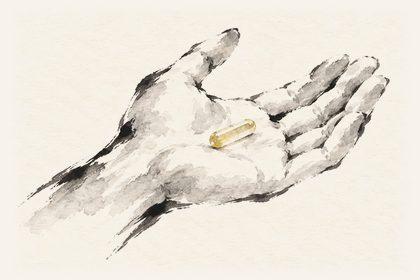<figcaption>How do I take it?</figcaption></figure>
        <figure>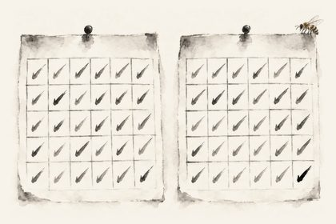<figcaption>How long does a bottle last?</figcaption></figure>
        <figure>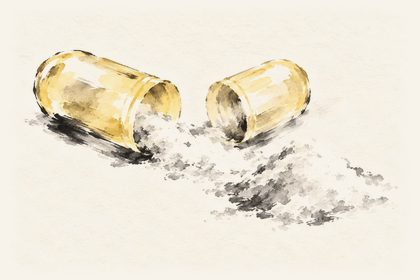<figcaption>What is the capsule made of?</figcaption></figure>
        <figure>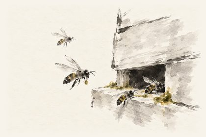<figcaption>Allergic to bee products?</figcaption></figure>
        <figure>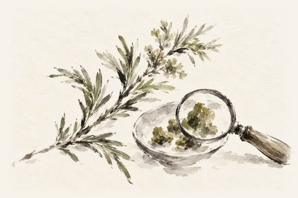<figcaption>Clinical trial?</figcaption></figure>
        <figure>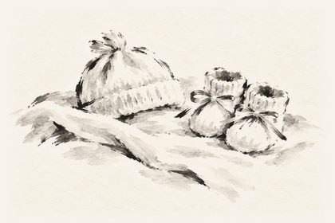<figcaption>During pregnancy?</figcaption></figure>
      </div>
    </div>
    <div class="product">
      <h3>Nature Calm</h3>
      <div class="paints">
        <figure>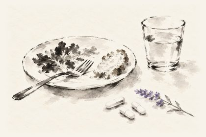<figcaption>How do I take it?</figcaption></figure>
        <figure>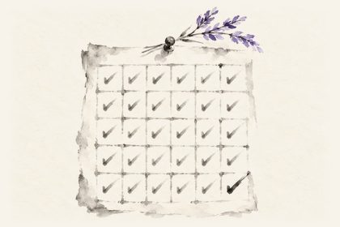<figcaption>How long does a bottle last?</figcaption></figure>
        <figure>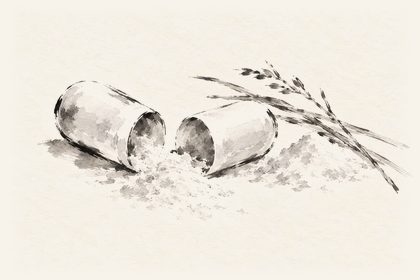<figcaption>What is the capsule made of?</figcaption></figure>
        <figure>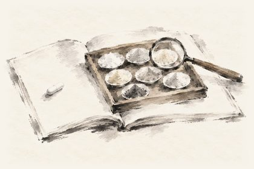<figcaption>Clinical trial?</figcaption></figure>
        <figure>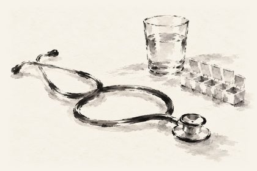<figcaption>With medicines?</figcaption></figure>
      </div>
    </div>
    <div class="product">
      <h3>Turmerific</h3>
      <div class="paints">
        <figure>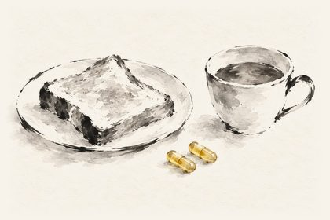<figcaption>How do I take it?</figcaption></figure>
        <figure>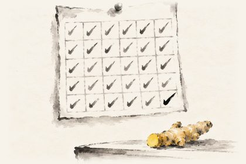<figcaption>How long does a bottle last?</figcaption></figure>
        <figure>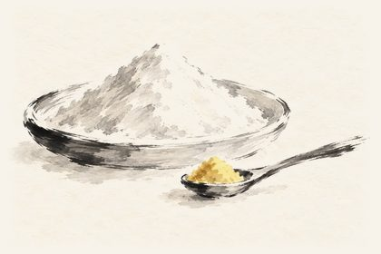<figcaption>Is the 1,000 mg all curcumin?</figcaption></figure>
        <figure>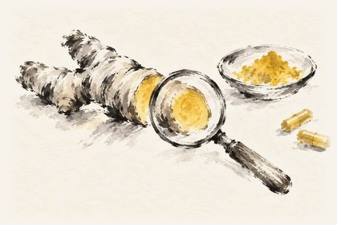<figcaption>Clinical trial?</figcaption></figure>
        <figure><figcaption>Medicines, surgery, pregnancy?</figcaption></figure>
      </div>
    </div>
  </section>

  <section>
    <h2>What changed from the mockup</h2>
    <ul>
      <li>The round "+" is on laptop rows too. In the mockup, grey questions didn't look clickable.</li>
      <li>Every question is in ink, not grey.</li>
      <li>The baby booties were repainted. The first ones looked like lumpy slippers.</li>
      <li>NuriCell's research tray was repainted. The first one showed a star anise, which NuriCell doesn't contain.</li>
      <li>The paintings are trimmed closer, so there's less empty paper around each answer.</li>
    </ul>
  </section>

  <section>
    <h2>Checks</h2>
    <p id="checks">On the built site, with everyone's latest work: the new Questions check 403 of 403 (all five pages, laptop and phone, no script, four languages). The page checks all pass: NuriCell 430, Advanced OPC 185, Green Bee Propolis 273, Turmerific 155, Nature Calm 159, homepage 282. Menu bar 315 of 316: the one miss is an old tablet crane jump, not this change.</p>
    <p class="note">All 28 paintings came from Codex on your ChatGPT plan. No paid picture credits used.</p>
  </section>
</main>
